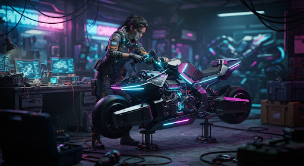

Tasks
Monitor and manage your active generation queues.
Running Tasks 3
movie
Video Gen
High Priority
Cinematic flythrough of cyberpunk city
Model: Visionary-XL-v2 • 4K • 60fps
75%
~2m remaining
image
Image Gen Batch
Character concept art variations
Prompt: Sci-fi mechanic, highly detailed, greg rutkowski style
32%
Generating 4/12
Completed

image
Image
Sci-fi mechanic character concepts
2 hours ago
movie
Video
Mountain Valley Sunrise Timelapse
Yesterday
description
text_snippet
Text
Marketing copy for Q3 Product Launch
2 days ago